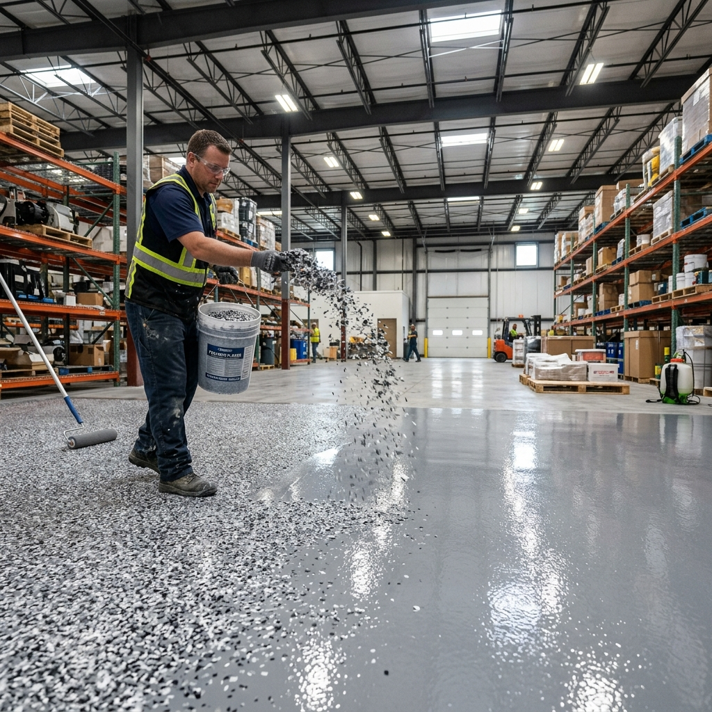

A polyurea base coat, full-broadcast decorative flake, and a tough polyaspartic topcoat. One system that handles chemical spills, heavy traffic, and daily abuse — and looks good doing it.
Traditional epoxy is brittle, yellows in UV light, and takes days to cure. Our systems use a polyurea base coat — 4x more flexible and impact-resistant than epoxy — topped with a UV-stable polyaspartic clear coat that cures hard enough for foot traffic in hours, not days. The full-broadcast flake in between hides imperfections, adds slip resistance, and gives you a custom look you actually want to walk into.

Better chemistry, faster cure, more options than standard epoxy.
Hot tires, brake fluid, motor oil, dropped tools — our polyurea base coat is flexible enough to absorb impact without chipping, and the polyaspartic topcoat won't yellow or peel when it gets hot.
Most jobs are done in a single day. The polyaspartic topcoat cures fast enough for foot traffic in 6–8 hours and vehicle traffic the next morning — no week-long shutdowns.
Dozens of flake color blends — from subtle naturals to bold commercial patterns. Solid color topcoats and metallic finishes are available too. We bring samples to every on-site consult.
Seven steps. Most jobs are done start to finish in one day.
Moisture vapor transmission is the number one reason floor coatings fail early. We test the slab with a calcium chloride or relative humidity probe before committing to any system — if the numbers are off, we address it before coating.
We grind the entire surface with a planetary diamond grinder to achieve a CSP 2–3 concrete surface profile. This opens the pores of the slab so the polyurea base coat bonds chemically to the concrete rather than just sitting on top of it.
Cracks are chased out and filled with flexible epoxy filler. Any spalled or deteriorated areas get patched and leveled. The coating follows the contour of the slab — imperfections that aren't fixed now will show through later.
The base coat is rolled and back-rolled across the prepared slab. Polyurea cures faster and stays more flexible than epoxy, giving the system its impact resistance and its bond strength to the concrete. This is the workhorse layer.
While the base coat is still wet, vinyl flake is broadcast to rejection — meaning full, even coverage with no bare spots. The flake locks in as the base coat cures, creating the decorative pattern and adding built-in texture to the surface.
Once the base coat has cured, loose standing flake is scraped flat with a floor scraper and vacuumed clean. Any low spots in the flake layer are filled with a grout coat before the topcoat goes on.
The clear polyaspartic topcoat seals the flake and delivers the final protection: UV stability so it won't yellow, chemical resistance against oils and solvents, and the chosen sheen level — satin, semi-gloss, or high-gloss.
Foot traffic in 6–8 hours. Vehicle traffic the next morning. No week-long cure periods, no strong solvent smell lingering for days. The fast-cure chemistry of polyaspartic is one of its biggest practical advantages over traditional epoxy.
The wrong choice doesn't fail immediately — it fails in year three. Here's how to pick right the first time.
| Coating & Flake System | Polished Concrete | |
|---|---|---|
| Where it wins | Chemical and grease environments — shops, kitchens, garages, food processing | Aesthetic-first spaces — retail, offices, showrooms |
| Where it struggles | High-moisture slabs need moisture testing and proper prep first | Absorbs oils if stain guard wears off — wrong call for wet or greasy floors |
| Chemical resistance | Best-in-class — sealed topcoat blocks oils, acids, and solvents completely | Good with stain guard; heavy chemicals need periodic resealing |
| Appearance | Fully custom — flake blends, solid colors, metallics. You choose. | Natural aggregate look — what you see is what you get |
| Long-term cost | Recoat every 10–15 years — still cheaper than any alternative | No recoating; just occasional stain guard reapplication |
| Repairs | Damaged sections can be spot-repaired without touching the rest | Deep scratches are permanent — the surface doesn't hide abuse |
| Install time | One day. Foot traffic in 6–8 hrs, vehicles by morning. | 2–4 days for the full grinding and polishing sequence |
Not sure which fits your space? Get a free on-site consult — we'll tell you straight.